The Sensor Watch Display
Before we talk about the Sensor Watch display, let’s go through some key terminology to clarify our discussion:
- Segment - A single addressable element on the liquid crystal display
- Indicator - A segment like “PM”, “24H” or the bell icon that indicates status
- Digit - A grouping of segments that can display a number, character or glyph
- Position - The placement of a digit on the display; for example, the first digit at the left of the top row is Position 0
We also tend to label the segments of each digit clockwise from the top segment: the top segment is segment A, top right is B, bottom right is C, all the way to the center digit which is segment G:
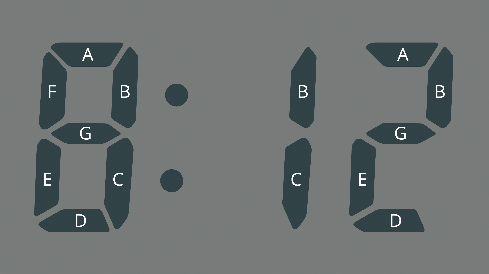
In this image of a clock, you can see where the 8 has all segments (A-G) energized. You can display a 1 by energizing only segments B and C, and a 2 by energizing segments A, B, D, E and G.
The Sensor Watch has five indicators, ten digits, and one segment dedicated to the colon in the time display. We choose to number the digits as follows:
- Positions 0-1 - The digits in the top middle, usually used to display the current mode or the weekday. We can call these the “Weekday” digits.
- Positions 2-3 - The digits at the top right, usually used to display the day of the month. The “Day” digits.
- Positions 4-9 - The digits on the bottom row, usually used to display the time; the “Clock” digits.
- Positions 4-5 are normally the hours display.
- Positions 6-7 are normally the minutes display.
- Positions 8-9 are normally the seconds display, and are slightly smaller than the other digits on the bottom row.
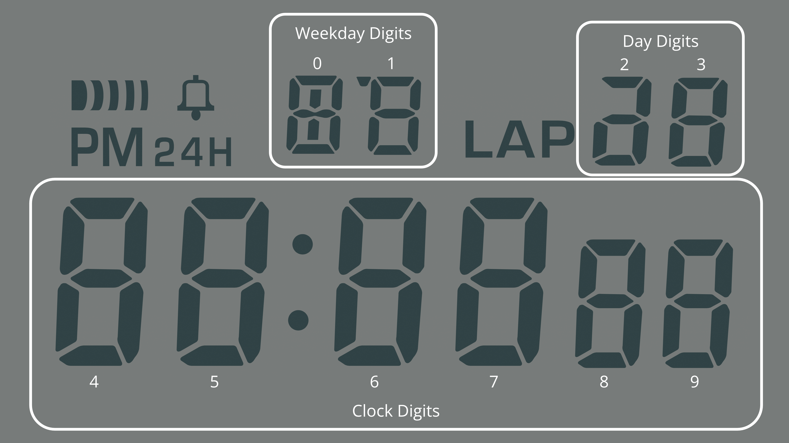
As alluded to in the “Big Picture” section, this document is not going to be prescriptive about how you use the digits in these positions; there is no “must” about how you display information on your watch face. Still, there are some broad guidelines on where these digits can be most useful:
- The “Weekday” digits are particularly useful for displaying alphanumeric information.
- The “Day” digits are best for displaying a single number from 0-39, such as a day, an index or a countdown.
- The “Clock” digits are well suited for the main informational display of your watch face.
You are going to need flexibility to adapt the information you want to display to the Sensor Watch LCD. This section is merely going to walk through some useful patterns, some limitations, and some best practices.
The Weekday Digits
The digits in these first two positions, positions 0 and 1, have some extra segments that make them useful for displaying letters. The stock F‑91W uses these positions to display the day of the week (SU, MO, TU, etc). If you have some alphanumeric information to relay on your watch face, it would make sense to look to these first; the tide prediction concept in the previous section, for example, imagined labeling the displayed prediction with “HT” for high tide and “LT” for low tide.
If you have no data to put in these segments, they can also serve as a useful spot to title your watch face, so that the wearer is clear what information they are looking at. The “Temperature” watch face, for example, uses these digits to display “TE”. This distinguishes it from the “Temperature Log” watch face, which titles itself “TL”.
Note that you are not limited to keeping the same characters in this position the whole time your watch face is on screen! The “Temperature Log” watch face displays “TL” most of the time, but when the wearer enters timestamp mode, it displays the word “AT” in these positions, signaling that the data point was logged “at” the displayed time and date.

Consider: when the wearer presses the “Mode” button and sees the watch face for the first time, “TL” tells them which watch face they are viewing. Once they have that information, they know they will remain in this watch face until they press “Mode” again, so you can feel free to change it after a short delay or in response to a button press. It’s done its job, and given the wearer the context they need to use the watch in the current mode.
Of course, you could use these segments in a completely different way. The LIS2DH accelerometer test face (which we’ll look at a bit later) uses these two positions to indicate the presence of an interrupt on the X or Y axes, lighting up “Y” and/or “X” when an interrupt is asserted, and remaining blank otherwise.
Limitations of the Weekday Digits
On a stock Casio F‑91W, the digits in these two positions normally display one of just nine values: abbreviations for the seven days of the week, the text “AL” for alarm mode, or the text “ST” for stopwatch mode. If you break this down, position 0 will only ever display one of the characters A, F, M, S, T or W, and position 1 will only display the letters A, E, H, L, O, R, T, or U. The Sensor Watch aims to display many more characters in these positions, and in the case of position 0, we can do it! With the exception of an uppercase R, the digit in position 0 can display any character in the Sensor Watch character set.
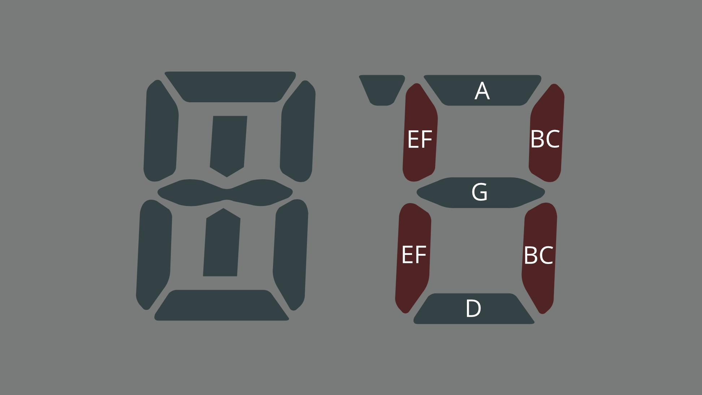
Position 1 is a bit more trouble. Looking closely at the position 1 letters above, you’ll notice that segments B/C and E/F never have to operate independently (as they would to, say, display the letter S or the number 2). Thus, to save pins on the LCD, the designers of the F‑91W tied these two pairs of segments together. This means you can only display a limited set of characters in position 1: the letters A, B, C, D, E, F, H, I, J, L, N, O, R, T, U and X, and the numbers 0, 1, 3, 7 and 8.
All of this is to say that you may need to think about terminology that makes sense for your watch face, and tweak it to fit the constraints. For example, the “Settings” watch face requires changing a setting related to Movement’s low power mode, but the ‘P’ in “LP” cannot be displayed in position 1. To address this limitation, the setting is instead called “Low Energy” mode, which abbreviates to “LE”.
The theme of limitations will come up in each of these groups.
The Day Digits
On a stock Casio F‑91W, these two digits normally display the day of the month. This makes this position very useful for displaying values from 0-39:
- The Clock and World Clock face use this area to display the day of the month.
- The TOTP watch face uses this area for a 30-second countdown, indicating the validity window for the displayed code
- The Temperature Log uses this area to display the index of the logged measurement, from 0 to 35
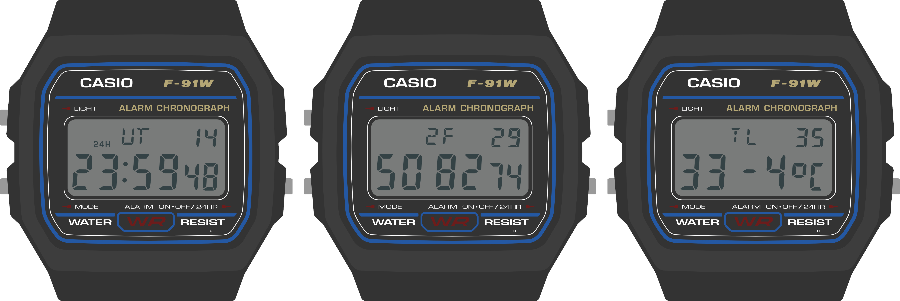
Limitations of the Day digits
While the digit in position 3 is a full-featured 7-segment display that can display any number and just about any letter, the digit in position 2 is the most limited digit on the watch: it can only display the numbers 1, 2 and 3. This constraint relates to the fact that it is missing one segment (segment F), and that segments A, D and G are all tied together.
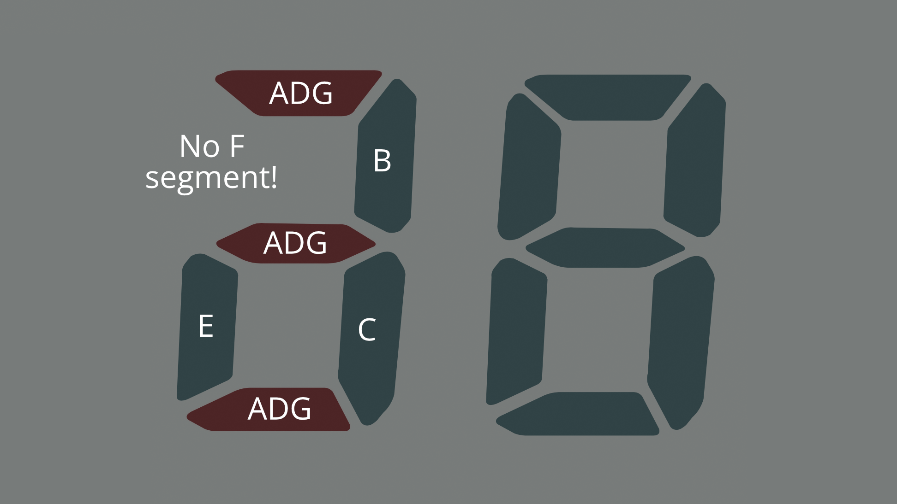
There’s not much to say about these digits because they are pretty limited: if you have a single letter or a number from 0-39, you can display it here. If not, you can leave these digits blank.
The Clock Digits
The bottom row of digits, positions 4-9, comprise the clock display on a stock F‑91W. This is the main event: you can display a ton of information here. But before we look at some of the ways we might want to use this display, let’s take a look at some of the subtler properties of these digits:
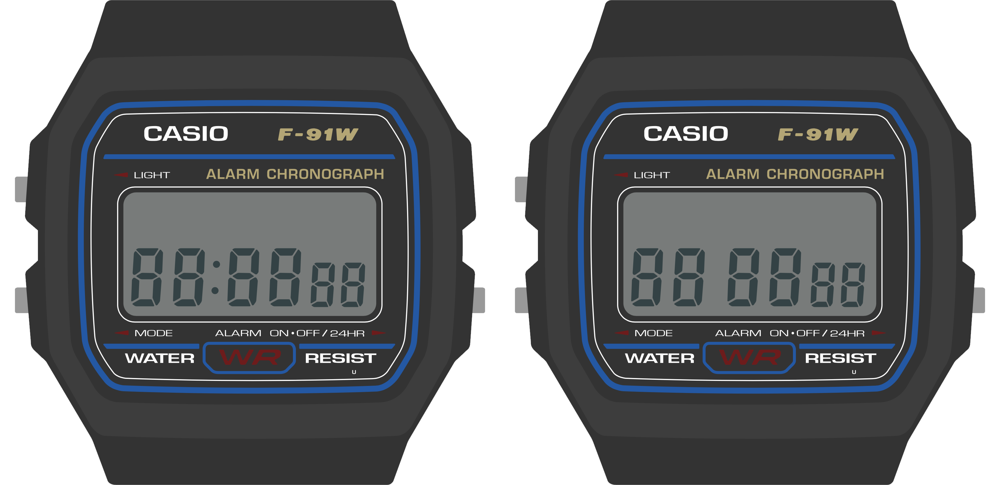
- First, note that the digits in positions 8-9, the seconds, are slightly smaller than the rest. This makes it obvious even without a colon that they are the seconds on a clock.
- Next, note the way that the colon separates positions 5 and 6 in the display on the left. This clarifies the separation of the hours and the minutes on the clock.
- Now look at the display on the right, where the colon is turned off. Note that in the absence of a colon, these digits are not evenly spaced: there is a gap between them.
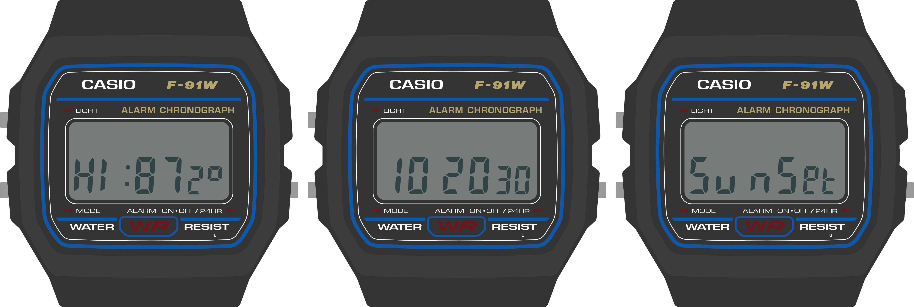
These details are useful to keep in mind as you think about the data you want to display, as these subtleties lend themselves to some non-obvious strategies. For example:
- Consider how the visual weighting of the seconds digits could make them useful for displaying the decimal part of a floating point number, as shown in the display on the left (87.2°).
- Also on the left: consider how the colon might be useful both as a separator in a clock display, and as a punctuation mark separating two concepts, like the high temperature label and the measured temperature.
- Consider how the spacing of these digits might let you treat this line not as one six-digit display, but as three distinct two-digit displays. For example: 10, 20 and 30 could represent three separate data points in the display in the middle.
- Also consider how the wearer’s eye would read across the display if a full word were placed there, as in the display on the right. Do your eyes notice the gap, or does the word “Sunset” read legibly?
You saw this guideline before in the “Big Picture” section, but it bears repeating: over time, the wearer will become familiar with the layout of your watch face, so don’t be afraid to use these digits in an unorthodox way.
Limitations of the Clock digits
As you might have expected, there are some limitations to the clock digits. The first limitation applies to all of them: these are 7-segment displays meant to display numbers, not letters. As such, characters like ‘M’ and ‘W’ are not available; they will render as an ‘N’ or a ‘U’ respectively. Additionally, some letters aren’t available in their preferred case; uppercase ‘R’, for example, will appear as a lowercase ‘r’. Finally, some of these characters may look a bit awkward. ‘K’, for example, requires a little bit of imagination, and ‘X’ requires a lot of imagination; the screens below are meant to display the words “Ranked” and “PIXEL”:
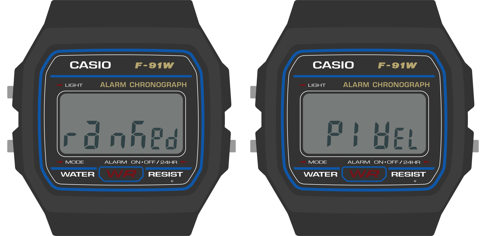
The second limitation has to do specifically with digits 4 and 6: the top and bottom segments of these digits (segments A and D) are tied together:
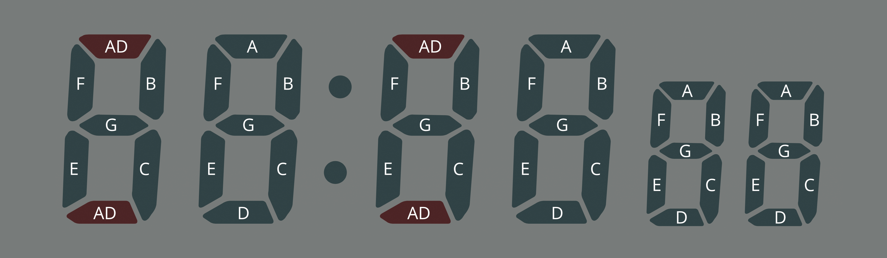
The Sensor Watch display library will try to work around this limitation in some cases. For example, some letters may have their case changed: in displaying the word “Apogee” below, the Sensor Watch will render the “a” in lowercase and the ‘O’ in uppercase — “apOgee” — to work around the constraints on positions 4 and 6. This is because position 4 cannot turn off segment D without also turning off segment A, as would be required for an uppercase ‘A’, and position 6 cannot turn on segment D without also turning on segment A, as would be required for a lowercase ‘o’.
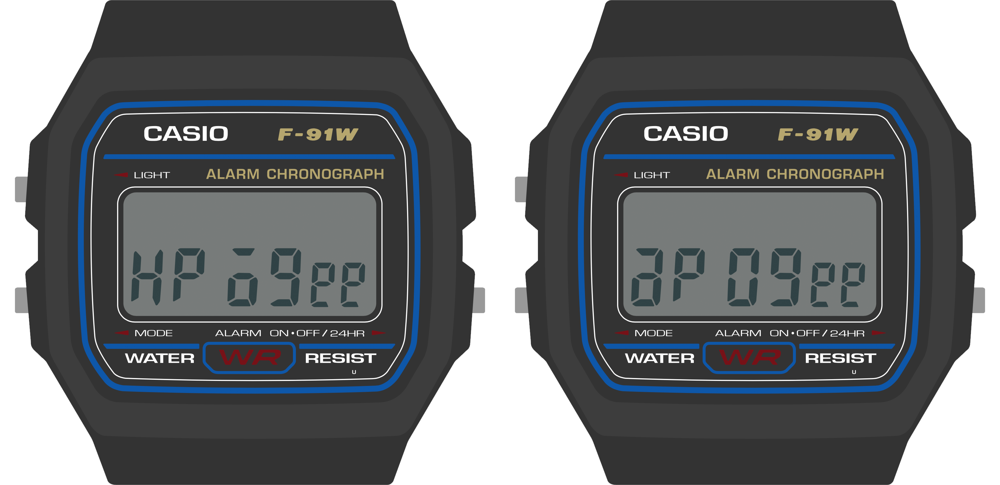
Other characters may take on slightly different forms in these positions: for example, a 7 in position 4 or 6 will render as a short “lowercase” 7, and characters that require a segment on the top or bottom may be shifted up or down to make the best use of the position.
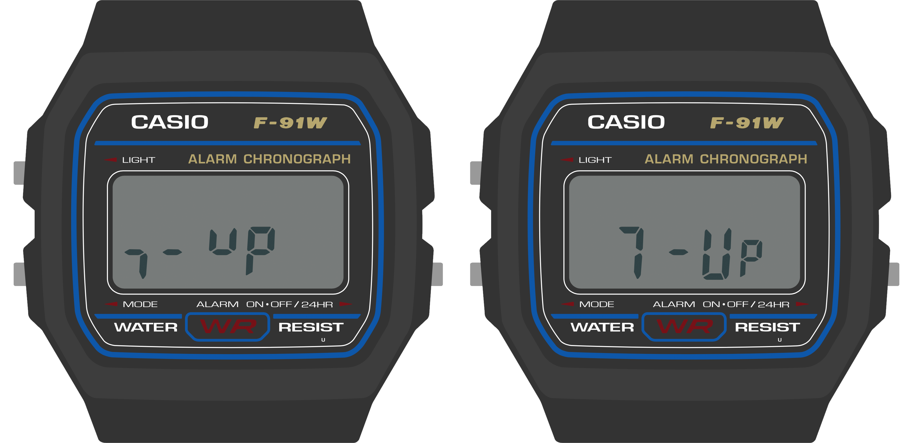
With some extra care, you can sometimes dodge this limitation. In the two screens above, for example, you can see that displaying the name of this popular soft drink in positions 4-7 results in a lowercase 7, and a U that’s shifted up to the top half of the digit. But by shifting it over to positions 5-8, both the 7 and the U get displayed normally.
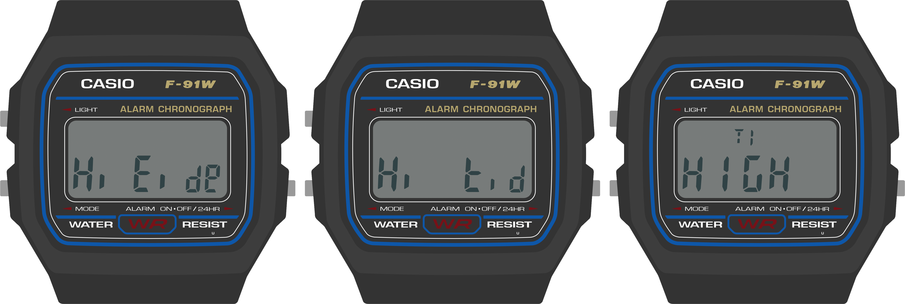
Note however that in some cases, you cannot dodge this limitation. Letters that can only be displayed by energizing segments A and D independently will not display correctly. In the above example, the lowercase ‘t’ in ‘Hi tide’ will not work in position 4 or 6. It will display as an uppercase E, “Hi Eide”, because segment D also controls the state of segment A. You will have to figure out another way to convey this concept, either by shifting the ‘t’ to a position that can display it, or re-imagining the way the information is presented to the wearer.
Regardless of case, the following characters are fully unsupported in positions 4 and 6: F, K, P, Q, T, X and Y, as well as the underscore and a few other punctuation marks. In addition, the decimal point appears as a hyphen; this may lead to confusion when displaying negative numbers, so you may have to work around this as well.
The Indicator Segments
In addition to the three major segmented display areas, the watch has five indicator segments: “Signal”, “Bell”, “PM”, “24H” and “LAP”. You can energize these indicator segments to convey information or status to the user. In the stock F‑91W, these have some fairly obvious uses: Signal and Bell indicate whether the hourly signal and alarm are active, and PM and 24H relate to the clock display. “LAP” only operates in stopwatch mode, where it indicates when the stopwatch is showing a lap time. Still, when looking at these indicators, you should consider what concepts people might have associated with these icons.
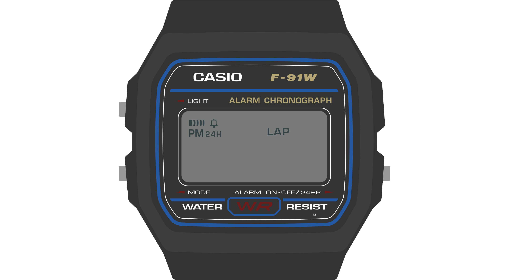
The “Signal” indicator takes the form of a series of bars moving from thick to thin. It does convey the sound waves of an hourly indicator, but consider other possible meanings: they could represent radio waves, sensor activity or the reading of data from an accessory board. The Temperature watch face, for example, energizes this segment to indicate that a new reading is being taken from the thermistor.
The “Bell” conveys the concept of an alarm bell, but consider alternate meanings like the presence of a notification or a warning condition. For example, a tide prediction face could energize this segment when high tide is very near — an important thing to know if you are walking along a remote stretch of beach!
The PM indicator has the narrowest use case: if you are displaying a time value that is in the afternoon, you should activate this segment. This guidance also applies to the 24H indicator. Also note that Movement has a global setting that will tell you whether the user has selected 24H mode; you should respect this whenever displaying time values.
Finally, the LAP indicator. This indicator has a very specific meaning for a stopwatch face, and almost no meaning anywhere else. The Stopwatch face uses this segment for its expected use case, but beyond that, it’s not a great semantic fit for most others. Having said that, if you need to indicate a rare warning or error condition, and none of the other indicators are a good fit, the LAP indicator might make sense. For example, the Simple Clock face energizes this segment when a low power condition is detected. It’s awkward, but it works.
Putting It All Together
While the previous sections outlined how each of these bits of the display worked on their own, the fact is, you will mix and match these strategies. We’ve seen how the Temperature and Temperature Log watch faces use the Weekday digits to display their name (TE, TL) and a data point. But a Sunrise/Sunset face could use those characters to display something about the data point: that this is a sunSEt at 5:42 PM on the 5th, and a sunRIse at 6:24 AM on the 6th:
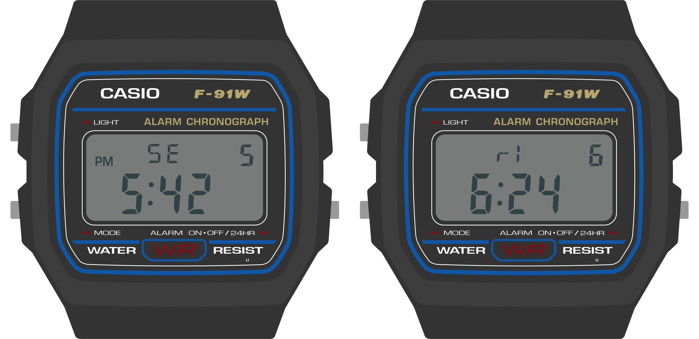
The accelerometer test face uses all of these areas in a radically different way. It uses the top row to indicate the presence of a Y, X or Z interrupt, and a single digit in the top right to count the last ten seconds to the logging of the next data point. The bottom line counts interrupts per minute, and displays the most recent three minutes’ counts in three two-digit groups on the clock line:
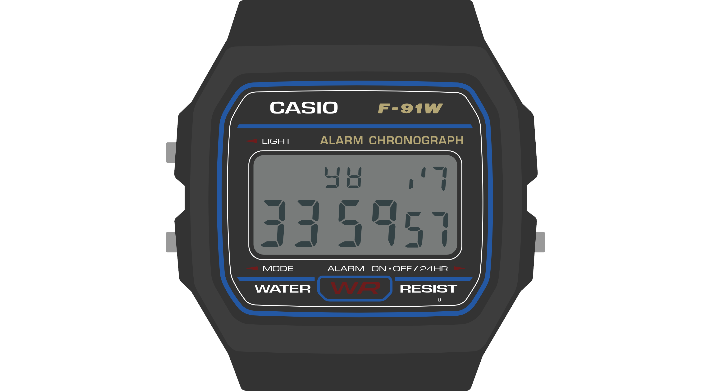
There’s also nothing that says you have to use these displays for digits at all. Here we imagine using the 12 vertical bars in the clock display to show an activity log over the last 12 hours, where the presence of a short bar indicates some activity in that hour, and a tall bar indicates more. You can imagine toggling this watch face between different timeframes, which could be displayed in the top right: 6/12/24, or 1d/2d/3d.
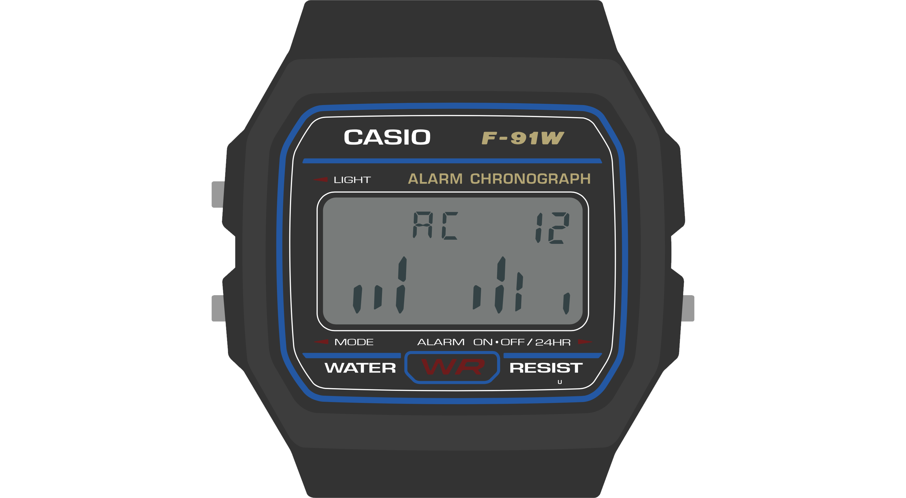
Final Notes
The Sensor Watch display is both powerful and limited: we can push it to do things that a stock F‑91W couldn’t dream of, but it also inherits some of the limitations inherent to the donor watch. Still, armed with these guidelines, you should feel empowered to build useful and information-rich watch faces. The important things to remember:
- Keep in mind how the segments are grouped, and think about how you can make the information you want to display fit into those groups.
- Be mindful of the limitations of various digits and groups, and prepare to be flexible when naming things or laying out text.
- Don’t be afraid of information-dense displays or unorthodox uses of the LCD. The wearer using your watch face will develop a mental model for the information you’re presenting to them.
- Use indicators to signal various conditions, and keep in mind creative ways of using them to convey meaning to the wearer.